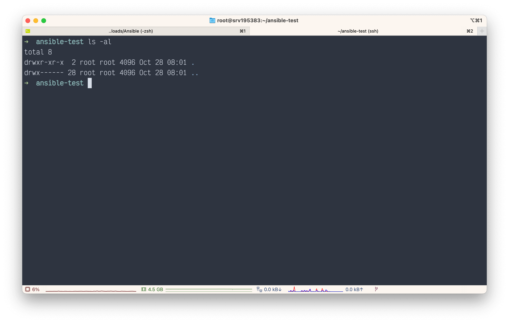
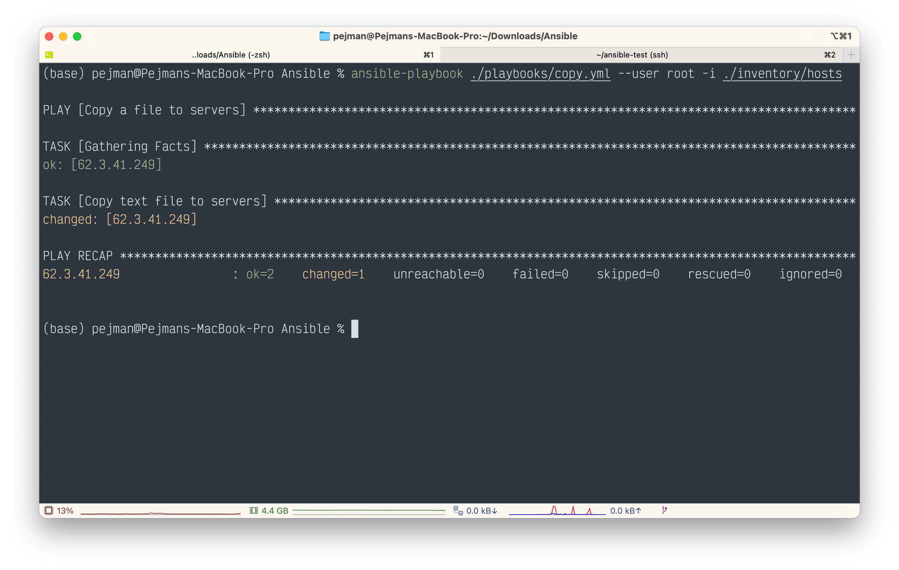
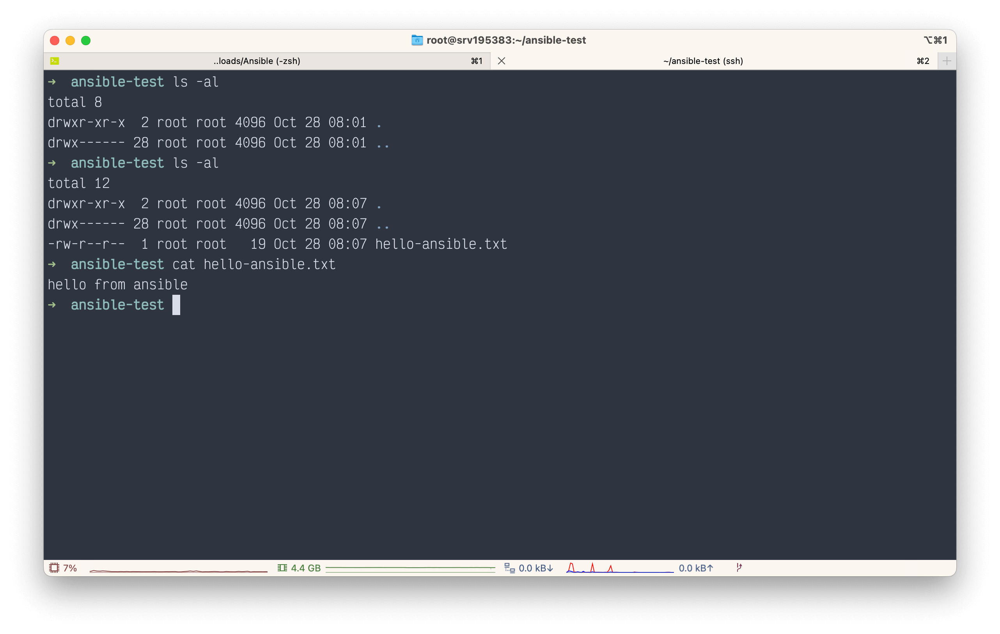

Ansible in Action
Installation
Note
There is no need to install ansible on servers, only on your local machine
- Linux
- MacOS
- Check ansible
ansible --version
// Output
ansible [core 2.13.5]
config file = None
configured module search path = ['/Users/pejman/.ansible/plugins/modules', '/usr/share/ansible/plugins/modules']
ansible python module location = /opt/homebrew/Cellar/ansible/6.5.0/libexec/lib/python3.10/site-packages/ansible
ansible collection location = /Users/pejman/.ansible/collections:/usr/share/ansible/collections
executable location = /opt/homebrew/bin/ansible
python version = 3.10.8 (main, Oct 13 2022, 09:48:40) [Clang 14.0.0 (clang-1400.0.29.102)]
jinja version = 3.1.2
libyaml = True
Check ansible
Create a folder called inventory and in that create a new file called hosts and group server IP and dns address in it.
Info
You can Specify that each server uses specific ssh-key 👇
[servers]
123.4.56.7
api1.test.com
[servers:vars]
ansible_ssh_private_key_file=~/.ssh/id_ed25519
ansible_user=root
...
Warning
ansible can't pass sshHostKeyChecking by default ([yes/no/fingerprint]). Although there is a way to ignore it via ~/.ansible.cfg filr but it's NOT recommended for long-live servers!
after that excute following command:
this means ansible can connect to servers and you are good to go.
Collections
List of modules and plugins that can be executed by ansible, whether built-in or installable via ansible-galaxy.
Info
ansible-galaxy is hub to upload & download ansible collections
# /opt/homebrew/Cellar/ansible/6.5.0/libexec/lib/python3.10/site-packages/ansible_collections
Collection Version
----------------------------- -------
amazon.aws 3.5.0
ansible.netcommon 3.1.3
ansible.posix 1.4.0
ansible.utils 2.6.1
ansible.windows 1.11.1
arista.eos 5.0.1
awx.awx 21.7.0
azure.azcollection 1.13.0
check_point.mgmt 2.3.0
chocolatey.chocolatey 1.3.1
cisco.aci 2.2.0
cisco.asa 3.1.0
cisco.dnac 6.6.0
cisco.intersight 1.0.19
cisco.ios 3.3.2
cisco.iosxr 3.3.1
cisco.ise 2.5.5
cisco.meraki 2.11.0
cisco.mso 2.0.0
cisco.nso 1.0.3
cisco.nxos 3.2.0
cisco.ucs 1.8.0
cloud.common 2.1.2
cloudscale_ch.cloud 2.2.2
community.aws 3.6.0
community.azure 1.1.0
community.ciscosmb 1.0.5
community.crypto 2.7.0
community.digitalocean 1.22.0
community.dns 2.3.3
community.docker 2.7.1
community.fortios 1.0.0
community.general 5.7.0
community.google 1.0.0
community.grafana 1.5.3
community.hashi_vault 3.3.1
community.hrobot 1.5.2
community.libvirt 1.2.0
community.mongodb 1.4.2
community.mysql 3.5.1
community.network 4.0.1
community.okd 2.2.0
community.postgresql 2.2.0
community.proxysql 1.4.0
community.rabbitmq 1.2.2
community.routeros 2.3.0
community.sap 1.0.0
community.sap_libs 1.3.0
community.skydive 1.0.0
community.sops 1.4.1
community.vmware 2.10.0
community.windows 1.11.0
community.zabbix 1.8.0
containers.podman 1.9.4
cyberark.conjur 1.2.0
cyberark.pas 1.0.14
dellemc.enterprise_sonic 1.1.2
dellemc.openmanage 5.5.0
dellemc.os10 1.1.1
dellemc.os6 1.0.7
dellemc.os9 1.0.4
f5networks.f5_modules 1.20.0
fortinet.fortimanager 2.1.5
fortinet.fortios 2.1.7
frr.frr 2.0.0
gluster.gluster 1.0.2
google.cloud 1.0.2
hetzner.hcloud 1.8.2
hpe.nimble 1.1.4
ibm.qradar 2.1.0
ibm.spectrum_virtualize 1.10.0
infinidat.infinibox 1.3.3
infoblox.nios_modules 1.4.0
inspur.ispim 1.1.0
inspur.sm 2.2.0
junipernetworks.junos 3.1.0
kubernetes.core 2.3.2
mellanox.onyx 1.0.0
netapp.aws 21.7.0
netapp.azure 21.10.0
netapp.cloudmanager 21.20.1
netapp.elementsw 21.7.0
netapp.ontap 21.24.1
netapp.storagegrid 21.11.1
netapp.um_info 21.8.0
netapp_eseries.santricity 1.3.1
netbox.netbox 3.8.0
ngine_io.cloudstack 2.2.4
ngine_io.exoscale 1.0.0
ngine_io.vultr 1.1.2
openstack.cloud 1.10.0
openvswitch.openvswitch 2.1.0
ovirt.ovirt 2.2.3
purestorage.flasharray 1.14.0
purestorage.flashblade 1.10.0
purestorage.fusion 1.1.1
sensu.sensu_go 1.13.1
servicenow.servicenow 1.0.6
splunk.es 2.1.0
t_systems_mms.icinga_director 1.31.0
theforeman.foreman 3.7.0
vmware.vmware_rest 2.2.0
vultr.cloud 1.1.0
vyos.vyos 3.0.1
wti.remote 1.0.4
playbooks
for example we want to apt update and install oh-my-zsh on our servers via ansible. we need to use playbooks in order to do that.
To execute a playbook use following command:
$ ansible-playbook ./playbooks/apt.yml --user root -i ./inventory/hosts
// Output
PLAY [servers] **************************************************
TASK [Gathering Facts] ********************************************************
ok: [123.4.56.7]
TASK [apt] ********************************************************************
changed: [123.4.56.7]
PLAY RECAP **********************************************************
123.4.56.7 : ok=2 changed=1 unreachable=0 failed=0 skipped=0 rescued=0 ignored=0
Multiple tasks in a Playbook
If you want to run multiple tasks in a playbook concurrently, use async with poll set to 0. When you set poll: 0, Ansible starts the task and immediately moves on to the next task without waiting for a result. Each async task runs until it either completes, fails or times out (runs longer than its async value). The playbook run ends without checking back on async tasks. Check npm-install.yml in playbooks.
Use shell command in ansible playbook
---
- name: Example SHELL Command
hosts: servers
tasks:
- name: Check a specific docker container and Print it
shell: docker ps | grep "<container_name>"
register: container_status # Save results of shell command in "container_status" variable
- debug: msg={{container_status.stdout_lines}}
Variables
In the YAML file, variables are declared with curly braces {{ }}, but there are some points that we should consider:
- If curly braces come right after
:YAML consider them as YAML dictionary so we have to define it like"{{variable}}"
- If curly braces don't come right after
:, you can define it just with curly braces
Define variables
- Hard coded in playbook:
- In Command line:
$ ansible-playbook -i inventory/hosts playbooks/create-user.yml --extra-vars "username=pejman user_group=admin"
- In variable file (format:
YAML):
---
- name: Create User in SERVER
hosts: servers
vars_files:
- "../vars/project-vars.yaml"
vars:
user_comment: this_{{username}}
tasks: ...
- Prompt variables in
Terminal:
- name: Prompt variables in terminal
hosts: servers
vars_prompt:
- name: prompted_variable
prompt: Enter variables
...
Enter variables: 🔐
PLAY [Prompt variables in terminal] *********
TASK [Gathering Facts] *********
...
Ansible Configurations
Create an ansible.cfg file to set some settings like path to inventory files, check hosts, etc. So you don't have to write them in command line every time
Ansible with Docker
Check these files to get familiar with ansible-docker integrations
Example


